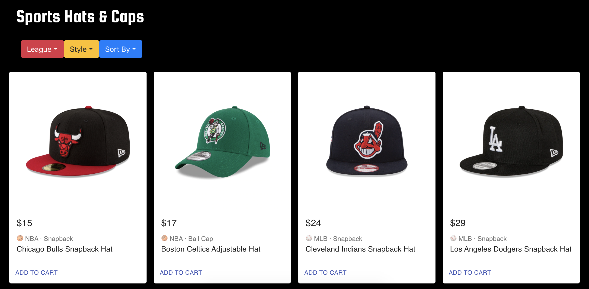

Sports Hats & Caps is an ecommerce website that sells merchanise hats from major sports leagues in the US, notably NBA and MLB.
The web interface is designed and implemented with React. Some of the main functions include filtering and sorting items based on preferences, and adding and removing items to the shopping cart.
Type
CS1300 Development Project
Date
November 2020
Online Sports Hats and Caps Store built with ReactJS
Overall, I learned a lot about React from this project. More specifically, I was able to get familiar with components, how data is passed down through components and how various user interactions can trigger state changes in components.
Structuring the architecture of the website also helped me understand how components interact with each other to create a responsive interface.